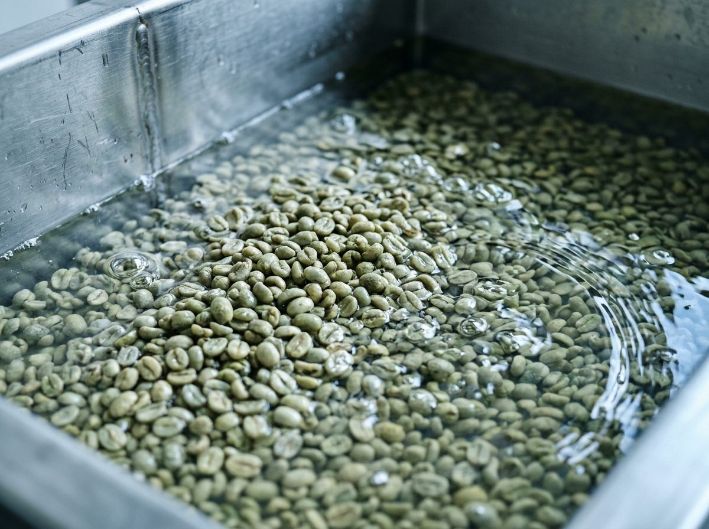
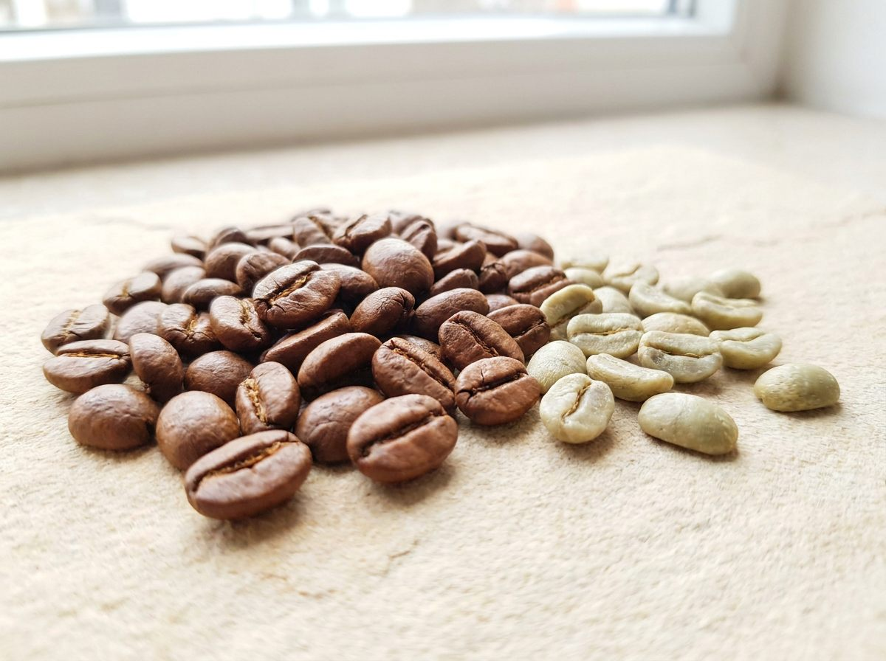
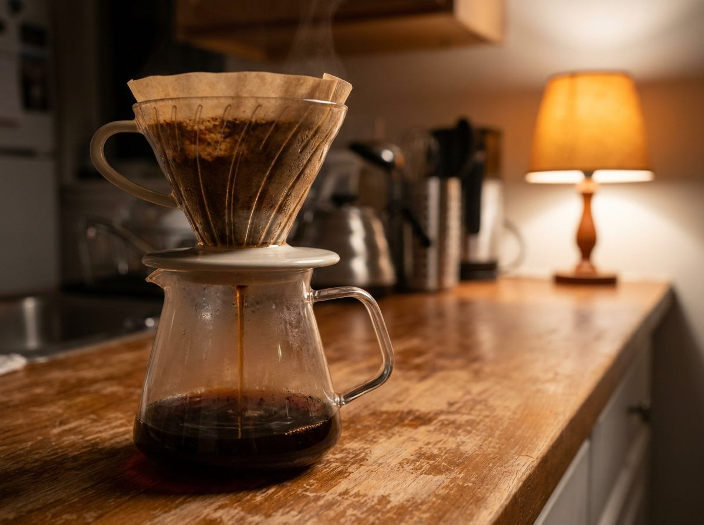

Inicio / Journal / Café descafeinado: cómo se hace, cuánta cafeína tiene y cómo elegir uno bueno
Origen y proceso
Café descafeinado: cómo se hace, cuánta cafeína tiene y cómo elegir uno bueno
Te gusta el café, pero no a las once de la noche. El descafeinado tiene mala fama. Muchas veces el problema no es el descafeinado, sino el grano que se usó.

¿Cuánta cafeína tiene un descafeinado?
Compara una taza de descafeinado con otras bebidas. Mueve el control para cambiar el café que usas.
Con 18 g de café descafeinado, la taza tiene como máximo unos 18 mg de cafeína.
Cifras de referencia de la EFSA (Autoridad Europea de Seguridad Alimentaria). El máximo del descafeinado sale del límite legal del 0,1 % de cafeína en el café tostado; en la práctica suele quedar por debajo, porque no toda la cafeína pasa a la taza.
¿Cómo se quita la cafeína?
Todo se hace con el café verde, antes de tostar. Después el grano se seca y se tuesta como cualquier otro. Estos son los métodos habituales:
Con agua
Se remoja el café verde y la cafeína se retira con agua y filtros, sin disolventes. Es el que verás como «descafeinado al agua».
Con CO₂
Dióxido de carbono a alta presión arrastra la cafeína y deja casi todo lo demás.
Con acetato de etilo
Un compuesto que también está de forma natural en algunas frutas. En café de Colombia se obtiene a menudo de la caña de azúcar.
Con diclorometano
Muy eficaz. Está autorizado en la Unión Europea con un límite de residuos de 2 mg por kilo de café tostado.

Fuente: Directiva 2009/32/CE sobre disolventes de extracción (en España, Real Decreto 1101/2011).
¿Es seguro?
Los métodos y los disolventes que se usan en la Unión Europea están regulados y tienen límites de residuos.
Si prefieres evitar los disolventes, busca un descafeinado al agua o con CO₂, y pregunta qué método se usó.
Cinco cosas que mirar
- El método: un buen tostador sabe decirte cómo se descafeinó.
- El origen: país y región, como en cualquier café de especialidad.
- La fecha: un tueste reciente se nota también en el descafeinado.
- El sabor: notas concretas, no solo «suave».
- La molienda: en grano, o molido al hacer el pedido.

Cómo prepararlo para que sepa bien
Usa la misma receta que con un café normal.
Si te sale amargo, prueba una molienda un poco más gruesa o agua un poco menos caliente.

Preguntas
Preguntas frecuentes
¿Otra duda? Escríbenos →01¿El café descafeinado tiene cafeína?
Sí, un poco. Por ley, el café tostado descafeinado puede tener como máximo un 0,1 % de cafeína, frente a un mínimo del 0,7 % en el café normal.
02¿Cuánta cafeína tiene una taza de descafeinado?
Depende del café que uses. Con 18 g de café descafeinado, como máximo unos 18 mg. Un espresso normal ronda los 80 mg, según la EFSA.
03¿Cómo se quita la cafeína al café?
Con el café todavía verde, usando agua, CO₂ o disolventes autorizados. Después se seca y se tuesta.
04¿Qué es el descafeinado al agua?
Un método que retira la cafeína con agua y filtros, sin disolventes.
05¿Puedo tomar descafeinado por la noche?
Tiene muy poca cafeína. La EFSA indica que unos 100 mg cerca de la hora de dormir pueden afectar al sueño en algunas personas; una taza de descafeinado queda muy por debajo.